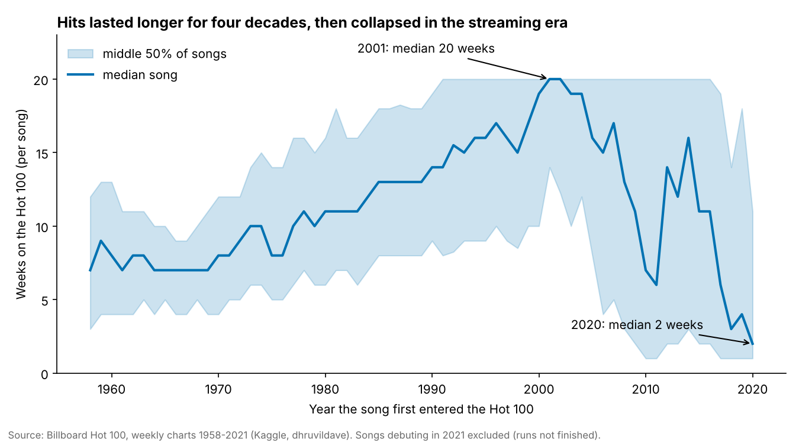
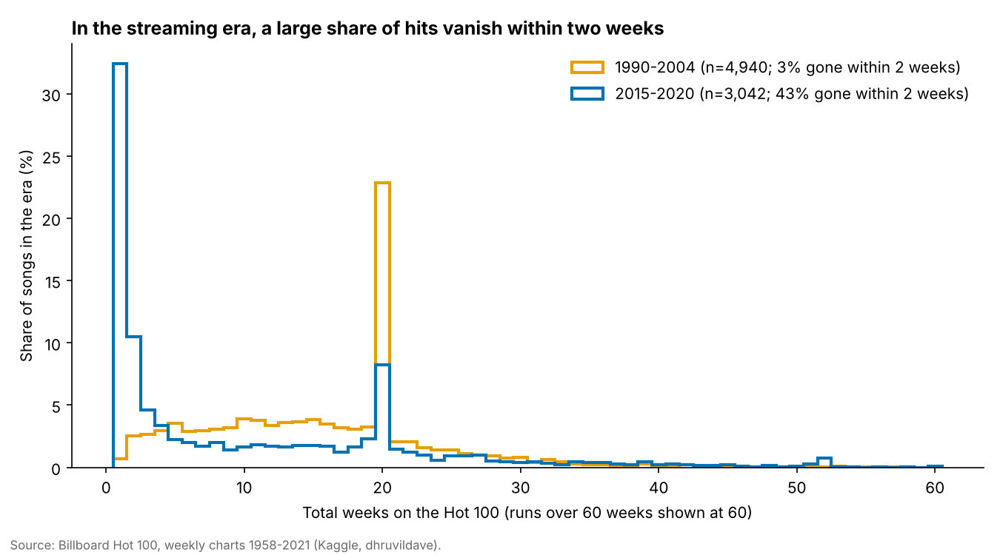

Disposable Hits, Global Sounds: Music Under Platform Capitalism
Team byte-me · IE 421 Data Science for Engineers · Theme T4: Culture by the Numbers
Status: Milestone 2 (Data & EDA checkpoint). This page will grow into the full data story.
Our questions
How has the lifespan of a hit song on the Billboard Hot 100 changed over time?
How similar are music tastes across countries, and which countries diverge?
Does being on the charts in many countries make a song more successful and longer-lived?
Question 1: Are hits becoming disposable?

Takeaway: the typical song's Hot 100 run grew from about 7 weeks in the 1960s to a peak of 20 weeks around 2001, then fell to just 2 weeks for songs debuting in 2020.
The upper edge of the band stays flat at 20 weeks from the 1990s on. This looks like a chart rule rather than listener behaviour: Billboard removes older songs that have fallen down the chart after about 20 weeks. We will document this in the data card and check it before the final draft.

Takeaway: only 3% of songs that debuted in 1990–2004 left the chart within two weeks; for 2015–2020 debuts it was 43%, and about one in three lasted a single week.
Next step: test whether this comes from streaming-era album releases, where many tracks from one album enter the chart for a single week, rather than from shorter lives of the biggest hits.